Wiener Schnitzel is a classic Austrian dish: thinly pounded veal (or pork) breaded and fried until golden. Crispy on the outside, tender inside,
traditionally served with lemon, parsley potatoes, or a simple salad. A true symbol of Austria’s culinary heritage, enjoyed in homes and restaurants
alike.
Tafelspitz
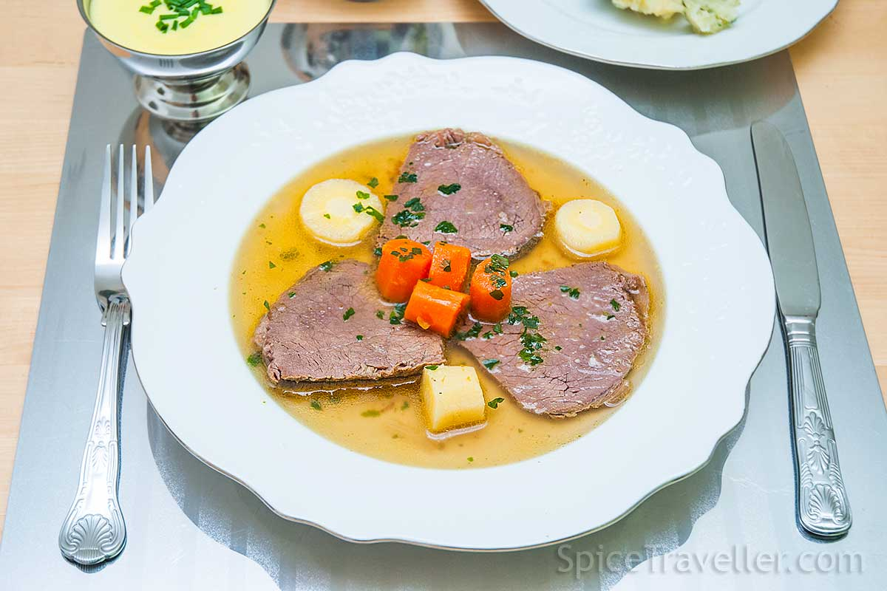
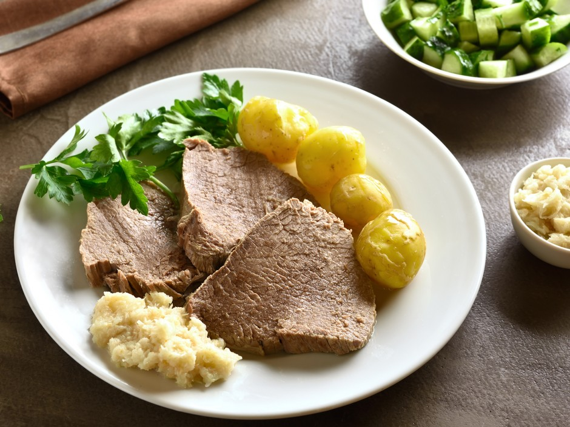
Tafelspitz isn’t just a meal — it’s a cornerstone of Austrian culinary tradition. Tender boiled beef served with root vegetables,
horseradish, and a rich broth, it’s a dish of elegance and simplicity. Traditionally enjoyed in family homes and classic Viennese
restaurants, every bite tells a story of care, local ingredients, and centuries of culinary craftsmanship. Comforting, hearty, and
timeless, Tafelspitz is more than food — it’s a taste of Austria’s soul.
Knödel
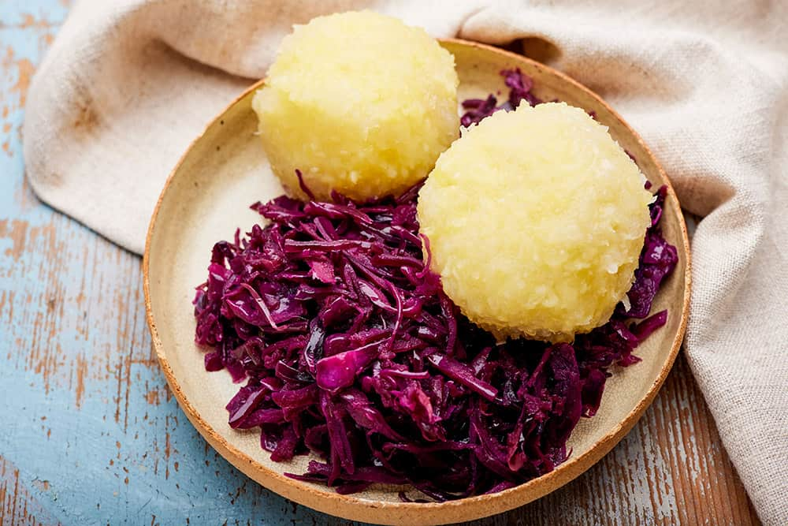
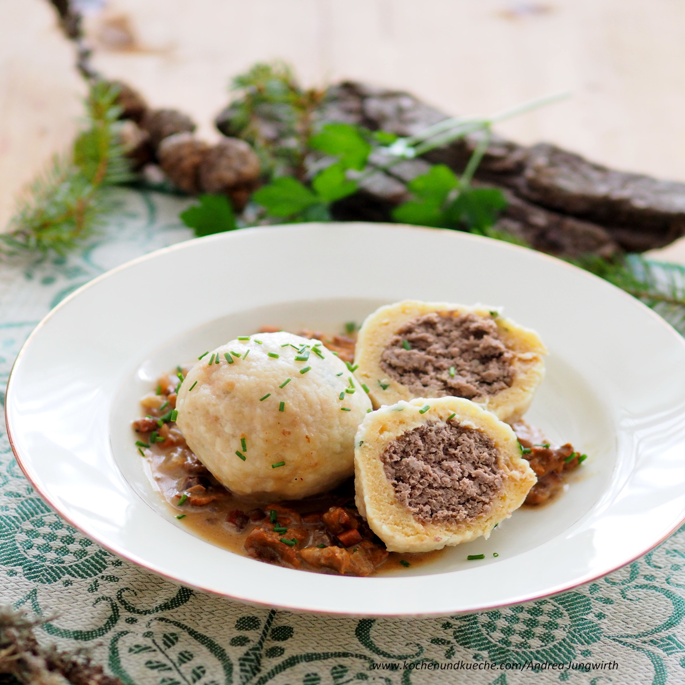
Knödel isn’t just a side dish — it’s a staple of Austrian tradition. Soft, hearty dumplings made from bread, potatoes, or flour, often
served alongside roasts, stews, or in soups, they bring warmth and comfort to every meal. Simple yet satisfying, Knödel reflects
centuries of local craftsmanship and the timeless charm of Austrian home cooking. Each bite is a taste of history, a touch of
tradition, and a reminder that the simplest dishes often leave the deepest impression.
Kaiserschmarrn
Kaiserschmarrn isn’t just a dessert — it’s a fluffy Austrian tradition. Light, shredded pancake pieces dusted with powdered sugar and
often served with fruit compotes or apple sauce, it’s sweet, playful, and comforting. Traditionally enjoyed in cozy mountain huts or
classic cafés, each bite brings warmth, nostalgia, and a taste of Austria’s culinary charm. Simple yet indulgent, Kaiserschmarrn
invites you to slow down, share, and savor a truly local experience.
Sachertorte
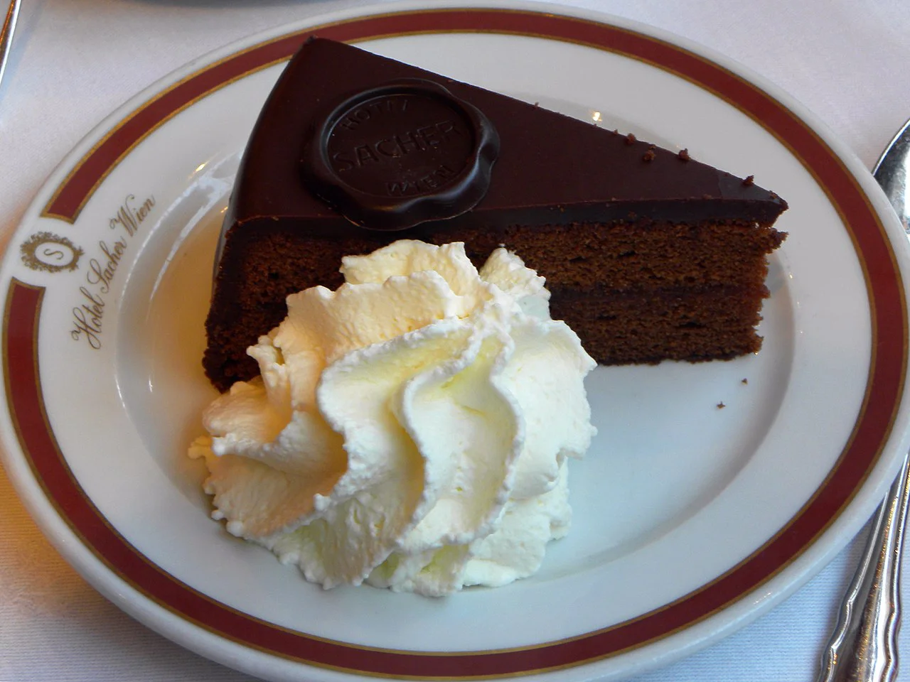
Sachertorte isn’t just a cake — it’s a legend of Viennese pastry culture. A rich chocolate sponge layered with delicate apricot jam
and sealed in a glossy dark chocolate glaze creates a perfectly balanced bite. Elegant, refined, and timeless, it’s traditionally
enjoyed with a cup of coffee in historic Viennese cafés. Every slice reflects classic craftsmanship, quiet luxury, and the enduring
charm of Austria — a dessert as iconic as Vienna itself.
Apfelstrudel
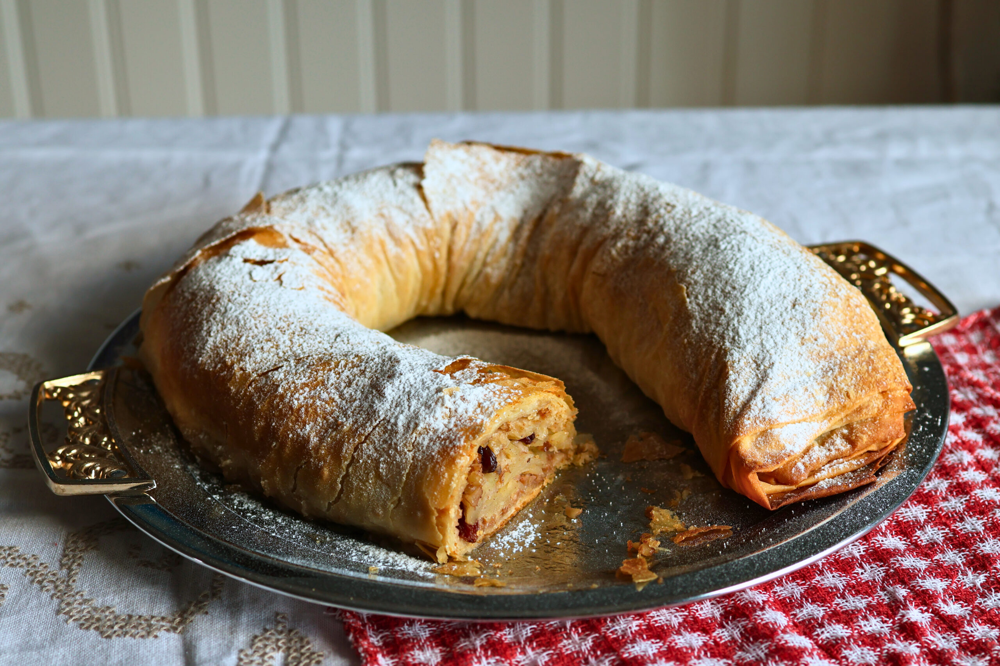
Apfelstrudel isn’t just a dessert — it’s a slice of Austrian heritage. Paper-thin pastry wraps a warm filling of spiced apples,
raisins, and cinnamon, baked until golden and delicately crisp. Light yet comforting, it’s traditionally enjoyed with a dusting of
powdered sugar, often paired with coffee in classic Viennese cafés. Every bite balances sweetness and warmth, carrying centuries of
craftsmanship and the timeless charm of Austria.
 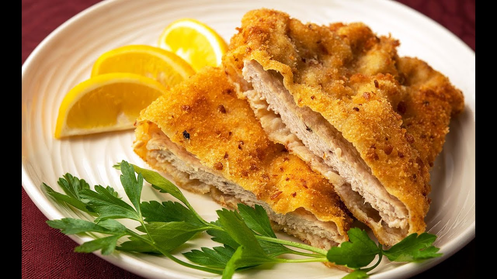
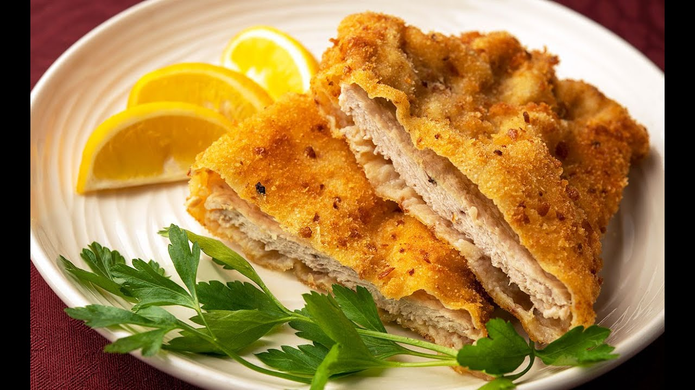


 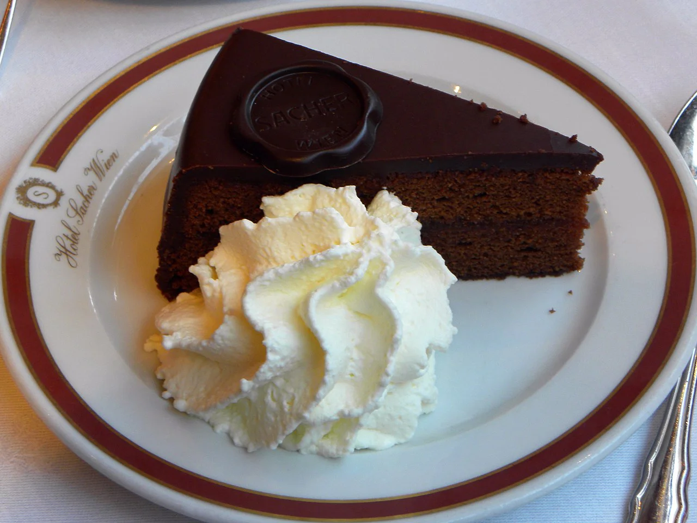
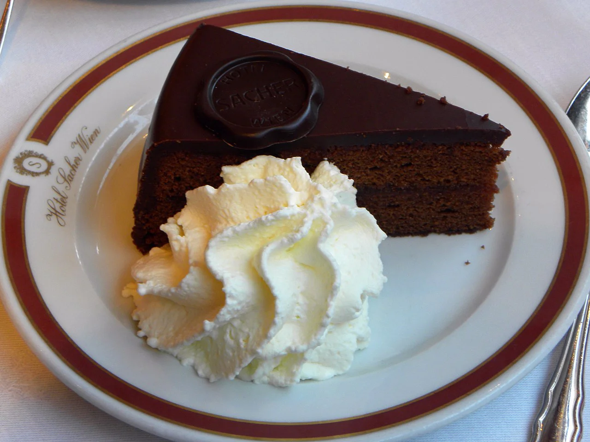
 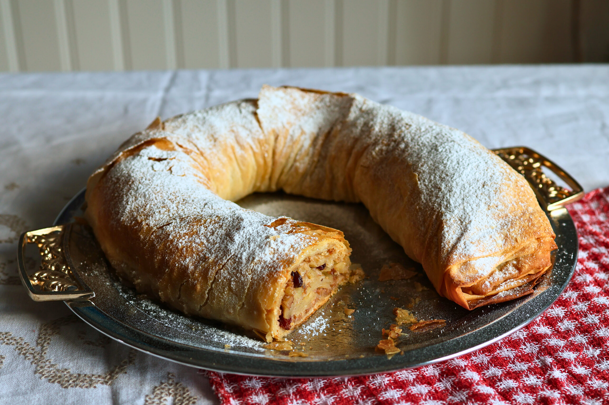
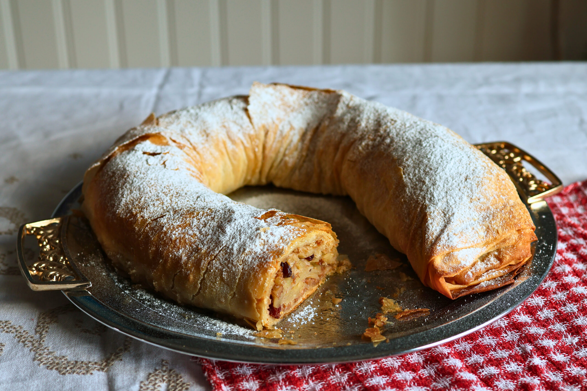